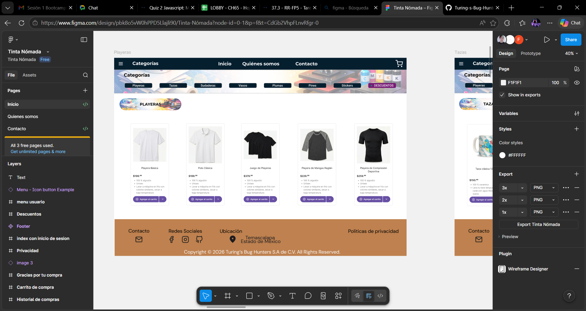

Soy un desarrollador web apasionado, especializado en la creación de experiencias digitales modernas, responsivas y centradas en el usuario. Domino HTML, CSS y JavaScript, y disfruto transformar ideas en interfaces funcionales y atractivas. Mi enfoque combina buenas prácticas de desarrollo con un fuerte sentido de diseño, logrando sitios web que no solo funcionan, sino que inspiran confianza y generan impacto.
Plataforma de e-commerce para productos creativos. Participé como FullStack Developer implementando carrito de compras, integración de pagos y optimización de UX con metodologías ágiles.
Tecnologías: Java, Spring Boot, MySQL, HTML, CSS, JS
Ver en GitHub
Plataforma de e-commerce para productos creativos. Participé como FullStack Developer implementando carrito de compras, integración de pagos y optimización de UX con metodologías ágiles.
Tecnologías: Java, Spring Boot, MySQL, HTML, CSS, JS
Ver en GitHubEstructura semántica y accesibilidad web
Diseño responsivo y animaciones
Programación interactiva y dinámicas
Desarrollo backend, OOP y aplicaciones full stack
Experiencia en programación orientada a objetos, uso de librerías como Pandas y Flask.
Control de versiones, ramas y resolución de conflictos
Modelado de datos, consultas SQL y optimización
Framework para aplicaciones Java, APIs REST y microservicios
Transmitir ideas técnicas de forma clara a equipos y clientes.
Colaboración en proyectos ágiles y hackathons.
Encontrar soluciones creativas y prácticas bajo presión.
Aprender nuevas tecnologías y ajustarse a distintos entornos.